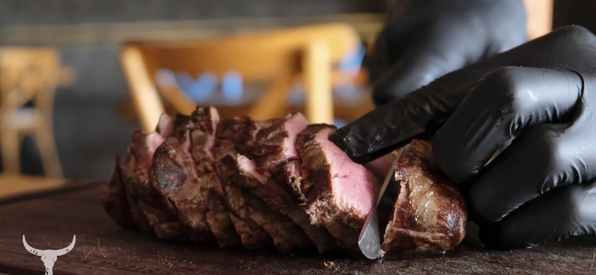
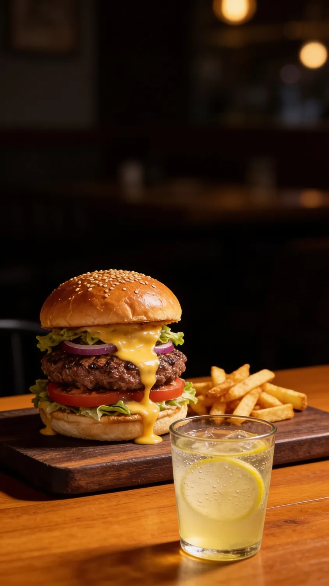
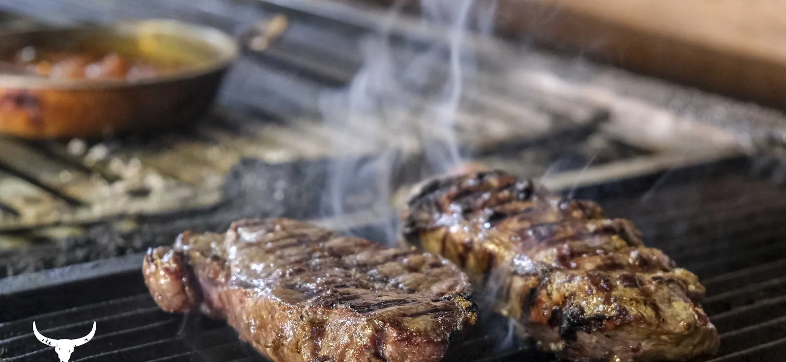

Starters

Beef Carpaccio
1.100 ₺Thinly pounded beef, cherry tomatoes, rocket and parmesan.
Rosespierre
120 g1.100 ₺Thinly pounded beef seared on the grill, with rocket and parmesan.
Warm Smoked Beef
960 ₺Smoked beef served warm, with rocket and parmesan.
İsli Et (Bosnian-style dried beef)
950 ₺Dried beef made in house, with rocket and cherry tomatoes.
Large Cheese Plate
930 ₺A selection of local cheeses with dried beef.
Smoked Beef
900 ₺Rocket, parmesan and balsamic dressing.
Cheese Plate
760 ₺With a slice of Ezine sheep’s cheese+160 ₺Bone Marrow
650 ₺Fresh beef marrow seared on the grill and served in the bone. On request, in a hot pan with plenty of butter.
French Fries
350 ₺Seasoned.
Soup
Soup of the Day
140 ₺Ask your waiter what is cooking today.
Salads
Steak Salad
700 ₺Diced beef, Mediterranean greens, tomato, corn, extra virgin olive oil.
Grilled Halloumi Salad
680 ₺Mediterranean greens, sliced olives, caper flowers, grilled halloumi.
Chicken Salad
600 ₺Chicken in sauce, Mediterranean greens, cucumber, extra virgin olive oil.
Tuna Salad
560 ₺Mediterranean greens, sliced olives, caper flowers, tuna.
Tulum Cheese Salad
550 ₺Mediterranean greens, cherry tomatoes, tulum cheese, pomegranate, corn, walnuts.
Garden Salad
450 ₺Mediterranean greens, tomato, corn, cucumber, extra virgin olive oil.
Rocket Salad
450 ₺Onion, tomato, parmesan, extra virgin olive oil.
Shepherd’s Salad
450 ₺Tomato, cucumber, onion, pepper, parsley.
Köfte and Adana

Şevket Köfte (grilled meatballs)ŞEVKET’S
200 g600 ₺With fries.
Şevket Grilled Sucuk (beef sausage)ŞEVKET’S
200 g580 ₺With fries.
Köfte with Kaşar Cheese
250 g650 ₺With fries.
Kalkan Köfte
500 g1.100 ₺One large köfte to share, with fries.
Adana-Urfa Kebab
900 ₺Hand-minced beef and lamb, with lavash, tomato, pepper and onion.
House-made Beef Sausage
800 ₺With fries.
Burgers
All served with cheddar, house sauce and fries.

Şevket BurgerŞEVKET’S
200 g730 ₺With smoked beef.
120 g610 ₺Lokum Burger
120 g900 ₺With beef tenderloin.
Mushroom Burger
130 g680 ₺With freshly picked village mushrooms.
Sucuk Burger
120 g680 ₺With sucuk from our own butcher.
Mini Burger
70 g550 ₺
Steaks
With our spinach and mushroom sauce and a baked potato. Garnishes change with the season.

Ottoman Steak
750–800 g3.900 ₺Porterhouse Steak
600–650 g3.400 ₺T-bone Steak
450–500 g2.900 ₺Dallas Steak
450–500 g2.900 ₺Beef Chop
350–400 g2.450 ₺New York Steak
300 g2.200 ₺Şevket Kobe
200 g2.200 ₺
Red Meats

Şevket SpecialŞEVKET’S
350 g2.500 ₺Beef tenderloin in a hot pan with plenty of butter. For two.
For four, 720 g4.900 ₺Dana Lokum (beef tenderloin)
200 g1.300 ₺From the very centre of the tenderloin; spinach and mushroom sauce, baked potato.
Filet Mignon
200 g1.300 ₺Thick-cut tenderloin; spinach and mushroom sauce, baked potato.
Beef Ribeye
220 g1.300 ₺With spinach and mushroom sauce and a baked potato.
Beef Shashlik
250 g1.300 ₺Beef tenderloin in a cream sauce, in a hot pan with cheddar.
Şevket Spaghetti
200 g1.200 ₺With sautéed spinach and mushrooms and a baked potato.
Lamb
Garnishes change with the season.
Rack of Lamb
1.650 g3.990 ₺Size and price may vary; ask your waiter.
Lamb New York
400 g2.400 ₺Spinach and mushroom sauce, baked potato.
Lamb Neck
2.400 ₺Baked potato, sautéed spinach and mushrooms, rocket, tomato.
Lamb Küşleme (lamb tenderloin)
200 g1.300 ₺Spinach and mushroom sauce, baked potato.
Lamb Lokum
200 g1.300 ₺Spinach and mushroom sauce, baked potato.
Lamb Chops
300–350 g1.280 ₺Spinach and mushroom sauce, baked potato.
Külbastı (grilled lamb cutlet)
200 g1.050 ₺Spinach and mushroom sauce, baked potato.
Lamb Shish
200 g1.050 ₺Spinach and mushroom sauce, baked potato.
Liver Shish
900 ₺Lavash, tomato, pepper, onion.
Fajitas
Served hot, with lavash.
Steak Fajita
800 ₺Thinly sliced tenderloin, cherry tomatoes, rocket, peppers.
Chicken Fajita
700 ₺Thinly pounded chicken, cherry tomatoes, rocket, peppers.
Chicken
Butterflied Chicken Wings
550 ₺With fries.
Chicken Drumsticks
550 ₺With fries.
Drinks
Cold drinks.
Homemade Lemonade
170 ₺Coca Cola
140 ₺Fanta
140 ₺Fruit Juice
120 ₺Ayran (yoghurt drink)
100 ₺Iced Tea
95 ₺Şalgam (fermented turnip juice)
85 ₺